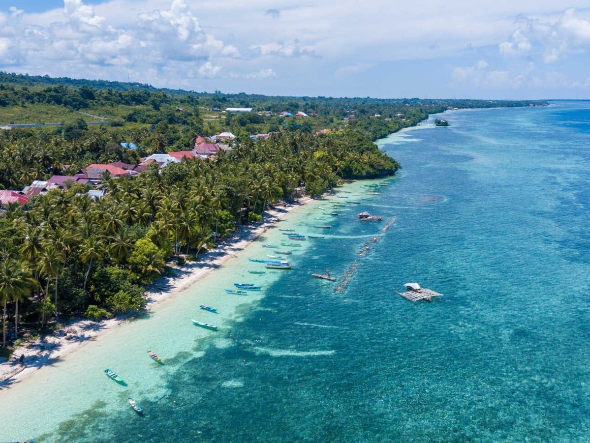
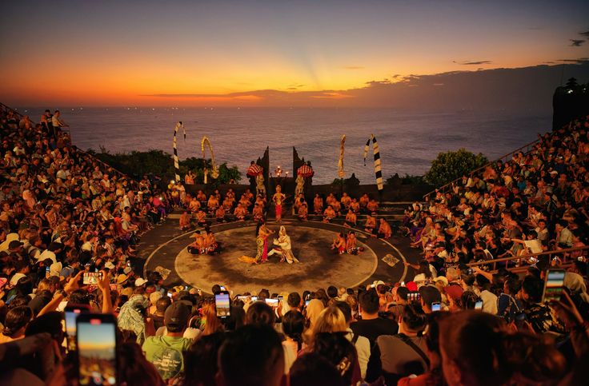
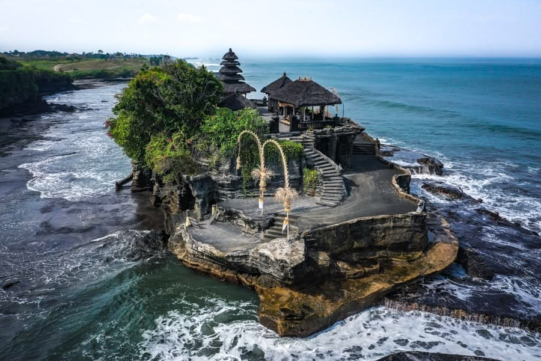
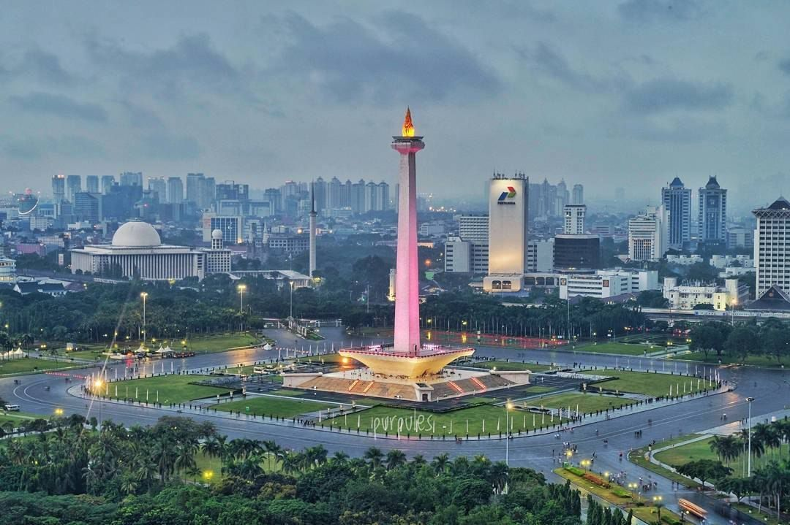
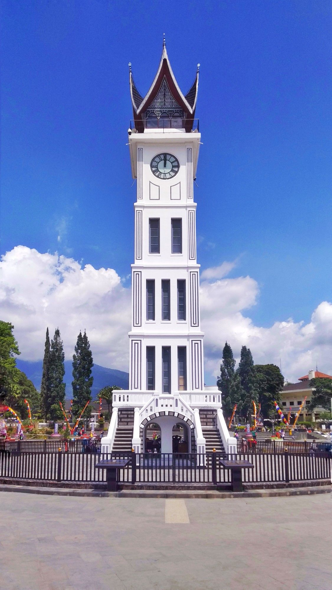
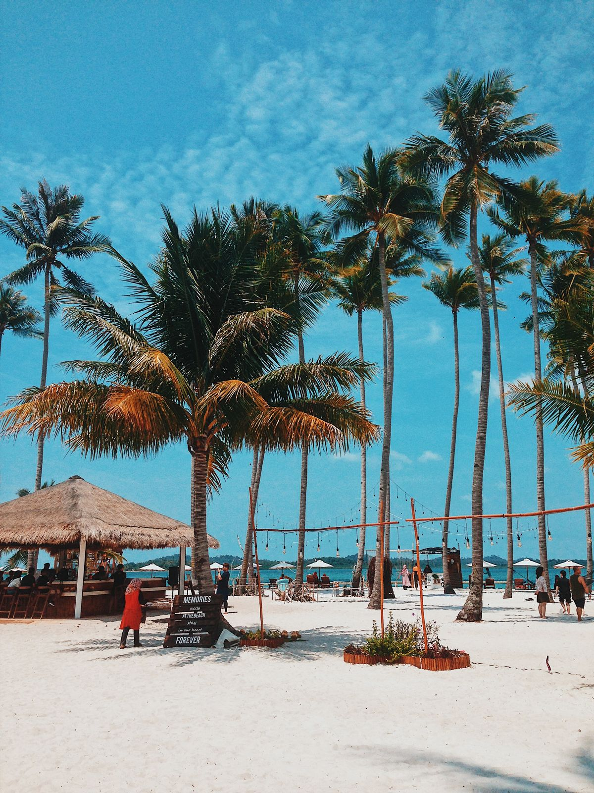

Wakatobi
Wakatobi
Sulawesi Tenggara
Wakatobi merupakan salah satu surga diving atau selam terbaik di dunia dengan terumbu karang yang masih alami dan keindahan bawah laut yang memukau.
Pelajari Lebih Lanjut
WARISAN BUDAYA, SENI, DAN TRADISI DAERAH
Temukan Destinasi Terbaik
Klik peta di bawah ini untuk mulai mengeksplor destinasi wisata terbaik dari setiap provinsi di Indonesia.
Jelajahi Nusantara
Tempat Menarik
01/05

Sulawesi Tenggara
Wakatobi merupakan salah satu surga diving atau selam terbaik di dunia dengan terumbu karang yang masih alami dan keindahan bawah laut yang memukau.
Pelajari Lebih Lanjut
Bali
Tanah Lot adalah destinasi ikonik di Bali yang terkenal dengan pura di atas batu karang dan pemandangan matahari terbenam yang memukau.
Pelajari Lebih Lanjut
Daerah Khusus Ibukota Jakarta
Monas adalah ikon Jakarta yang melambangkan perjuangan bangsa Indonesia, dengan puncak berlapis emas dan pemandangan kota dari ketinggian.
Pelajari Lebih Lanjut
Sumatera Barat
Jam Gadang adalah ikon Bukittinggi yang terkenal dengan menara jam bersejarah dan arsitektur khas Minangkabau yang memukau.
Pelajari Lebih Lanjut
Batam
Ranoh Island adalah destinasi wisata bahari di Batam yang terkenal dengan pantai berpasir putih, air laut jernih, dan beragam aktivitas seru bersama keluarga.
Pelajari Lebih Lanjut